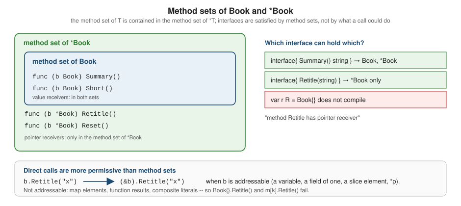

Methods and Receivers
|
This content was generated with the assistance of AI and should be verified against the official documentation before being relied on in production. |
This page is written against Go 1.27 (go1.27.2), checked on 2026-10-18; every go.mod shown has the line go 1.27.
A method is a function with an extra parameter, the receiver, written between func and the method name. Methods
are how Go attaches behaviour to a type, but unlike in class-based languages there is no class body: a method is
declared at package level, next to the type, and any defined type in the package can have them, not only structs.
This page covers declaring methods, the choice between value and pointer receivers, method sets (the rule that decides
which interfaces a type satisfies), nil receivers, method values and method expressions, methods on non-struct types,
and the new generic methods of Go 1.27.
It builds on Structs and Embedding and
Pointers and Value Semantics, and leads into
Interfaces and
Composition and Object-Oriented Design.
For the same ideas in another language, see the impl blocks of the Rust Reference,
which uses the same shelf library-catalogue domain.
Every example was compiled, vetted with go vet and run with Go 1.27.2; the output shown is the real output, and the
compiler and vet messages are copied from real runs (file names are shortened to main.go). The go.mod is:
module example.com/shelf
go 1.27Declaring methods
A method declaration is a function declaration with a receiver in parentheses before the name. The specification (Method declarations) fixes these rules:
-
the receiver has the form
name Torname *T(orT/*Twith no name, or_).Tis the receiver base type; -
the base type must be a defined type (declared with
type) in the same package as the method, and must not be a pointer type or an interface type. So you cannot add methods toint,string,time.Timeor any type from another package; define your own type if you need to (see below); -
the method name must be unique among the type’s methods and its field names: a struct cannot have a field and a method both called
Title; -
there is no overloading: one name, one method per type;
-
the method is in the method set of the receiver type and is called with selector syntax,
x.Method(args).
package main
import (
"fmt"
"strings"
)
type Author struct{ Name string }
type Book struct {
Title string
Authors []Author
Pages int
}
// Summary has a value receiver: it gets its own copy of the Book.
func (b Book) Summary() string {
names := make([]string, 0, len(b.Authors))
for _, a := range b.Authors {
names = append(names, a.Name)
}
return fmt.Sprintf("%s by %s (%d pages)", b.Title, strings.Join(names, ", "), b.Pages)
}
// Retitle has a pointer receiver: it can change the caller's Book.
func (b *Book) Retitle(t string) { b.Title = t }
func main() {
b := Book{Title: "Dune", Authors: []Author{{"Frank Herbert"}}, Pages: 412}
fmt.Println(b.Summary())
b.Retitle("Dune (reissue)") // b is addressable: the compiler writes (&b).Retitle(...)
fmt.Println(b.Summary())
p := &b
fmt.Println(p.Summary()) // the compiler writes (*p).Summary()
}Dune by Frank Herbert (412 pages)
Dune (reissue) by Frank Herbert (412 pages)
Dune (reissue) by Frank Herbert (412 pages)The two methods differ only in the receiver. Summary has a value receiver (b Book): it works on its own copy of the
Book. Retitle has a pointer receiver (b *Book): it works on the caller’s Book and can change it. In both cases
the call is written b.Method(); the compiler adds the & or the * for you (see Calls and
addressability).
A method is just a function whose first parameter is the receiver, and the receiver follows the ordinary parameter rules: a value receiver is passed by value (copied), a pointer receiver passes the pointer by value. Everything on Pointers and Value Semantics about copies applies. In particular, a value receiver copies the struct header but not the memory that slices, maps and pointers inside it refer to.
Rejected declarations
The compiler reports each violation of those rules directly:
package main
type Book struct{ Title string }
func (b Book) Title() string { return "x" }
func (int) Double() {}
func main() {}main.go:5:15: field and method with the same name Title
main.go:3:19: other declaration of Title
main.go:7:7: cannot define new methods on non-local type intSource: Go spec: Method declarations
package main
type Book struct{}
type BookPtr *Book
func (b BookPtr) Foo() {}
type Namer interface{ Name() string }
func (n Namer) Bar() {}
func (b Book) Same() {}
func (b *Book) Same() {}
func main() {}main.go:7:9: invalid receiver type BookPtr (pointer or interface type)
main.go:11:9: invalid receiver type Namer (pointer or interface type)
main.go:14:16: method Book.Same already declared at main.go:13:15Source: Go spec: Method declarations
Declaring a method for a type from another package is the usual surprise ("cannot define new methods on non-local
type"). The fix is a new defined type in your package (type Title string, or a struct that wraps the foreign type) or
a plain function.
Receiver naming
The Go code review comments (Receiver Names) recommend a short
name, usually one or two letters taken from the type (b for Book, m for MemStore), used consistently in every
method of the type. Do not use this, self or me, which suggest an object model Go does not have, and do not
repeat the full type name. If the method does not use the receiver you can omit the name (func (Book) Kind() string)
or write _. Receiver names are per method, so the compiler does not force consistency; linters such as revive
(receiver-naming) and staticcheck (ST1016) do.
Value or pointer receiver?
Choosing the receiver kind is the most common design decision when writing methods. The Go FAQ (Should I define methods on values or pointers?) and the code review comments (Receiver Type) give the rules of thumb summarised here.
package main
import "fmt"
type Counter struct{ n int }
func (c Counter) IncValue() { c.n++ } // increments a copy
func (c *Counter) IncPointer() { c.n++ } // increments the original
func main() {
var c Counter
c.IncValue()
c.IncValue()
fmt.Println("after IncValue x2: ", c.n)
c.IncPointer()
c.IncPointer()
fmt.Println("after IncPointer x2:", c.n)
}after IncValue x2: 0
after IncPointer x2: 2IncValue incremented a copy, so the original never changed; IncPointer incremented the original.
| Use a pointer receiver when | Use a value receiver when | Notes |
|---|---|---|
the method must modify the receiver |
the type is a small immutable value ( |
mutating methods go with a pointer; "value" types are conventionally immutable |
the struct contains a |
the type is a map, a function or a channel (they are already references) |
copying a lock is a bug, and |
the struct is large and copying on each call would be wasteful |
the type is a slice and the method does not reslice it or reallocate |
measure before optimising; escape analysis can make either cheap |
some methods of the type already need a pointer receiver |
the type is a basic type such as an integer, a string or a float |
be consistent: do not mix kinds on one type |
in doubt |
pointer receivers are the safe default for structs |
Consistency is the rule that surprises most newcomers. The code review comments advise that every method of a type
should use the same receiver kind when practical, because a type whose method set depends on which methods you call is
hard to reason about, and because a mixed type cannot be used by value in the interfaces its pointer methods are
needed for (the next section). The standard library follows this: strings.Builder, bytes.Buffer and sync.Mutex
use pointer receivers throughout, while time.Time and netip.Addr are small values used by value.
Slices and maps are reference-like: a method with a value receiver on type Titles []string can modify the elements
and be seen by the caller, but it cannot change the length or replace the slice, because the slice header is copied.
Appending needs a pointer receiver, as Titles.Add does in the non-struct example
below. Maps can be modified through a value receiver because the map header points to shared data; only reassigning the
whole map needs a pointer.
Method sets
Every type has a method set: the methods that can be called on a value of that type through an interface, and the list that decides whether a type implements an interface. The rule from the specification (Method sets) is short:
-
the method set of a defined type
Tcontains the methods declared with receiverT; -
the method set of
*Tcontains the methods declared with receiverTand with receiver*T.
So the method set of T is a subset of the method set of *T, never the other way round. The reason is that a pointer
method needs an address to write through, and a value stored in an interface or returned from a function does not have
one that the caller owns.

📊 The table below summarises the sets, including what happens with embedded fields (the last two rows are verified by the program that follows):
| Type | Methods in its method set | Interface satisfied by it |
|---|---|---|
|
methods with receiver |
only interfaces made of value-receiver methods |
|
methods with receiver |
any interface |
struct |
promoted methods with receiver |
same as |
|
promoted methods with receiver |
same as |
struct |
promoted methods with receiver |
|
|
promoted methods with receiver |
same as |
The reflect package can list a method set. Type.Methods (new in Go 1.26) yields the methods in the method set of a
type, sorted by name, and reflect.TypeFor (Go 1.22) gets a reflect.Type without a value:
package main
import (
"fmt"
"reflect"
)
type Book struct{ Title string }
func (b Book) Summary() string { return b.Title }
func (b Book) Short() string { return b.Title[:1] }
func (b *Book) Retitle(t string) { b.Title = t }
func (b *Book) Reset() { b.Title = "" }
func (b *Book) Both(t string) error { b.Title = t; return nil }
func names(t reflect.Type) []string {
var out []string
for m := range t.Methods() {
out = append(out, m.Name)
}
return out
}
func main() {
fmt.Println("method set of Book: ", names(reflect.TypeFor[Book]()))
fmt.Println("method set of *Book: ", names(reflect.TypeFor[*Book]()))
}method set of Book: [Short Summary]
method set of *Book: [Both Reset Retitle Short Summary]Source: reflect.Type, reflect.TypeFor
package main
import (
"fmt"
"reflect"
)
type E struct{}
func (E) ByValue() {}
func (*E) ByPointer() {}
type Embeds struct{ E } // embeds E
type EmbedsPtr struct{ *E } // embeds *E
func names(t reflect.Type) []string {
var out []string
for m := range t.Methods() {
out = append(out, m.Name)
}
return out
}
func main() {
fmt.Println("Embeds: ", names(reflect.TypeFor[Embeds]()))
fmt.Println("*Embeds: ", names(reflect.TypeFor[*Embeds]()))
fmt.Println("EmbedsPtr: ", names(reflect.TypeFor[EmbedsPtr]()))
fmt.Println("*EmbedsPtr: ", names(reflect.TypeFor[*EmbedsPtr]()))
}Embeds: [ByValue]
*Embeds: [ByPointer ByValue]
EmbedsPtr: [ByPointer ByValue]
*EmbedsPtr: [ByPointer ByValue]Source: Go spec: Method sets, reflect.Type
Note that only exported methods appear in the reflect listing; unexported ones are in the method set too, but
reflect does not show them.
Why a value in an interface cannot use pointer methods
An interface value holds a copy of the dynamic value (see Interfaces).
The compiler cannot take the address of that copy for the caller, so calling a pointer method through the interface
would modify a hidden temporary and silently lose the change. The language forbids it instead: Book does not
implement an interface that needs Retitle, but *Book does.
package main
import (
"fmt"
"sync"
)
type Store interface {
Put(title string)
Len() int
}
type MemStore struct {
mu sync.Mutex
titles []string
}
func (m *MemStore) Put(title string) {
m.mu.Lock()
defer m.mu.Unlock()
m.titles = append(m.titles, title)
}
func (m *MemStore) Len() int {
m.mu.Lock()
defer m.mu.Unlock()
return len(m.titles)
}
func main() {
var s Store = MemStore{}
s.Put("Dune")
fmt.Println(s.Len())
}main.go:31:16: cannot use MemStore{} (value of struct type MemStore) as Store value in variable declaration: MemStore does not implement Store (method Len has pointer receiver)The message says exactly which method is the problem ("method Len has pointer receiver"). The fix is almost always to
store a pointer: var s Store = &MemStore{}, usually through a constructor such as NewMemStore that returns a
pointer. The catalog package states the intended relationship in code with a compile-time
assertion, var _ Store = (*MemStore)(nil), described in Interfaces.
Calls and addressability
A method call x.M() does not require x to be in the method set of the type you wrote the method on, because the
compiler rewrites the call when it is unambiguous
(Calls, Selectors):
-
if
xis of typeTandMhas a pointer receiver,x.M()means(&x).M(), providedxis addressable; -
if
xis of type*TandMhas a value receiver,x.M()means(*x).M()(a copy of*xis made, andxmust not be nil); -
x.ffor a pointerxto a struct means(*x).f; there is no->operator.
An expression is addressable (Address operators) if it is a variable, a pointer dereference, a slice element, a field of an addressable struct or an element of an addressable array. The results of function calls, map elements, composite literals and constants are not addressable. These are the cases the compiler rejects:
package main
import "fmt"
type Book struct{ Title string }
func (b *Book) Retitle(t string) { b.Title = t }
func newBook() Book { return Book{Title: "Emma"} }
func main() {
newBook().Retitle("Persuasion")
books := map[string]Book{"emma": {Title: "Emma"}}
books["emma"].Retitle("Persuasion")
fmt.Println(books)
}main.go:12:12: cannot call pointer method Retitle on Book
main.go:14:16: cannot call pointer method Retitle on BookSource: Go spec: Address operators
Both calls fail for the same reason: the temporary returned by newBook() and the map element have no stable address
that the method could modify. The map case is the common one in real code: to update a struct stored in a map, either
copy it out and put it back (b := books[k]; b.Retitle("x"); books[k] = b), or store pointers (map[string]*Book). See
Maps.
Embedding extends the same machinery: promoted methods are called on the embedded field, so a pointer method promoted
through an addressable Loan is available, and a method declared directly on the outer type shadows the promoted one
(an "override" only in the sense that the outer name wins; the embedded one is still reachable by qualifying it):
package main
import "fmt"
type Base struct{ ID int }
func (b Base) Describe() string { return fmt.Sprintf("base %d", b.ID) }
func (b *Base) SetID(id int) { b.ID = id }
type Loan struct {
Base
Member string
}
// Loan overrides nothing: it declares its own method with the same name,
// which shadows the promoted one (embedding is not inheritance).
func (l Loan) Describe() string { return "loan of " + l.Member + " / " + l.Base.Describe() }
func main() {
l := Loan{Base{1}, "ada"}
l.SetID(7) // promoted pointer method; l is addressable
fmt.Println(l.Describe())
fmt.Println(l.Base.Describe())
}loan of ada / base 7
base 7l.Describe() calls Loan's own method, which explicitly calls l.Base.Describe() when it wants the embedded one.
Nothing is dispatched dynamically: Base.Describe never calls back into Loan.Describe. This is the difference from
inheritance with virtual methods, and it is covered in
Composition and Object-Oriented Design.
Nil receivers
A pointer receiver is just a pointer, and a method can be called on a nil pointer: nothing is dereferenced until the method body does it. This lets a method give a sensible result for "no value", which is how linked lists, trees and optional values are often written. A nil receiver is a problem only when the method dereferences it, and the compiler cannot tell:
package main
import "fmt"
type Author struct{ Name string }
// DisplayName treats a nil *Author as "anonymous" instead of crashing.
func (a *Author) DisplayName() string {
if a == nil {
return "anonymous"
}
return a.Name
}
// Initial dereferences the receiver without checking.
func (a *Author) Initial() string { return a.Name[:1] }
// Plain has a value receiver.
func (a Author) Plain() string { return a.Name }
// Node is a linked list of titles whose methods accept the empty list (nil).
type Node struct {
Title string
Next *Node
}
func (n *Node) Len() int {
if n == nil {
return 0
}
return 1 + n.Next.Len()
}
func try(label string, f func() string) {
defer func() {
if r := recover(); r != nil {
fmt.Printf("%s: panic: %v\n", label, r)
}
}()
fmt.Printf("%s: %s\n", label, f())
}
func main() {
var a *Author
fmt.Println(a.DisplayName())
a = &Author{Name: "Ursula K. Le Guin"}
fmt.Println(a.DisplayName(), a.Initial())
var list *Node
fmt.Println("empty list:", list.Len())
list = &Node{"Dune", &Node{"Emma", nil}}
fmt.Println("two nodes: ", list.Len())
var missing *Author
try("pointer method, no nil check", missing.Initial)
try("value method through nil pointer", func() string { return missing.Plain() })
}anonymous
Ursula K. Le Guin U
empty list: 0
two nodes: 2
pointer method, no nil check: panic: runtime error: invalid memory address or nil pointer dereference
value method through nil pointer: panic: runtime error: invalid memory address or nil pointer dereference-
DisplayNameandLenchecka == niland work on a nil pointer;Lenon the empty list is the base case of the recursion. This is a style some standard-library and third-party types use deliberately, so document it. -
Initialdereferences the receiver without checking and panics with the runtime error shown. -
A method with a value receiver called through a nil pointer panics at the call site, before the method body runs, because the compiler dereferences the pointer to make the copy.
-
A nil receiver is not the same as a nil interface: an interface holding a typed nil pointer is not equal to nil, and calling a method on it reaches the method with a nil receiver. That trap is explained in Interfaces and Error Handling.
Method values and method expressions
A method can be turned into an ordinary function value in two ways (Method values, Method expressions):
| Form | Result type | Meaning |
|---|---|---|
|
the method’s signature without the receiver |
the receiver is evaluated and saved when |
|
|
the receiver becomes the first argument; |
|
|
works for pointer and value methods alike, because |
|
|
the first argument is any value implementing |
The crucial point is when the receiver is evaluated. For a value receiver, a method value takes a copy at that moment, so later changes to the original are invisible; for a pointer receiver it binds the pointer, so later changes are visible.
package main
import "fmt"
type Counter struct{ n int }
func (c Counter) Value() int { return c.n }
func (c *Counter) Inc() { c.n++ }
func main() {
c := &Counter{}
val := c.Value // method value: receiver *c is copied NOW
inc := c.Inc // method value: receiver &c is bound, so it sees the original
inc()
inc()
fmt.Println("bound Value:", val(), " live Value:", c.Value())
// Method expressions: the receiver becomes the first parameter.
f := Counter.Value // func(Counter) int
g := (*Counter).Inc // func(*Counter)
g(c)
fmt.Println("expression:", f(*c))
fmt.Printf("%T\n%T\n", f, g)
// (*T).Method also exists for value methods.
h := (*Counter).Value // func(*Counter) int
fmt.Println(h(c))
}bound Value: 0 live Value: 2
expression: 3
func(main.Counter) int
func(*main.Counter)
3val was taken when the counter was 0, so it keeps returning 0 even though two increments ran; inc increments the
original, and c.Value() sees both. Method values are what you pass as callbacks, for instance r.Replace or
sb.WriteString; method expressions are rarely needed, mainly in tables of operations, in reflection-like code and
in tests of interface methods.
package main
import (
"fmt"
"strings"
)
type Store interface {
Len() int
Put(string)
}
type memStore struct{ titles []string }
func (m *memStore) Len() int { return len(m.titles) }
func (m *memStore) Put(t string) { m.titles = append(m.titles, t) }
func main() {
// Method expression on an interface type: the receiver is the first argument.
length := Store.Len // func(Store) int
var s Store = &memStore{}
s.Put("Dune")
fmt.Println(length(s))
fmt.Printf("%T\n", length)
// Method value from an interface value: bound to the dynamic value at evaluation time.
put := s.Put
put("Emma")
fmt.Println(s.Len())
// A common real use: passing a method value where a func is expected.
r := strings.NewReplacer("a", "4", "e", "3")
titles := []string{"banana", "emma"}
fmt.Println(strings.Join(mapStrings(titles, r.Replace), ", "))
}
func mapStrings(in []string, f func(string) string) []string {
out := make([]string, len(in))
for i, s := range in {
out[i] = f(s)
}
return out
}1
func(main.Store) int
2
b4n4n4, 3mm4Source: Go spec: Method expressions
The same rule applies to defer and go, which evaluate the receiver and the arguments immediately and run the call
later:
package main
import "fmt"
type Counter struct{ n int }
func (c Counter) Show(label string) { fmt.Println(label, c.n) }
func (c *Counter) Report(label string) { fmt.Println(label, c.n) }
func (c *Counter) Inc() { c.n++ }
func main() {
c := Counter{}
// defer evaluates the receiver and the arguments immediately: a value
// receiver is copied here, so the later increments are not seen.
defer c.Show("deferred value method:")
// A pointer-receiver call binds &c, so it sees the final value.
defer c.Report("deferred pointer method:")
c.Inc()
c.Inc()
c.Show("end of main:")
// A method value is an ordinary func value and can be stored.
handlers := []func(){c.Inc, c.Inc}
for _, h := range handlers {
h()
}
c.Show("after handlers:")
}end of main: 2
after handlers: 4
deferred pointer method: 4
deferred value method: 0Source: Go spec: Defer statements
The value-receiver call shows the counter as it was when defer ran (0); the pointer-receiver call is deferred with
the address of c, so it prints the final value. Deferred calls run last-in-first-out, hence the order of the last two
lines.
Evaluating a method value can itself panic, which is easy to miss because the call comes later:
package main
import "fmt"
type Store interface{ Len() int }
type Author struct{ Name string }
func (a Author) Plain() string { return a.Name }
func try(label string, f func()) {
defer func() { fmt.Printf("%s: recovered: %v\n", label, recover()) }()
f()
}
func main() {
try("method value from a nil interface", func() {
var s Store
f := s.Len // evaluated here, not when f is called
_ = f
})
try("value-method value through a nil pointer", func() {
var p *Author
f := p.Plain // copies *p now, so it dereferences nil now
_ = f
})
}method value from a nil interface: recovered: runtime error: invalid memory address or nil pointer dereference
value-method value through a nil pointer: recovered: runtime error: invalid memory address or nil pointer dereferenceSource: Go spec: Method values
Both panics are raised when the method value is evaluated: for a nil interface because there is no dynamic type to
look the method up in, and for a value-receiver method of a nil pointer because the copy of *p is made at once. A
method value of a pointer-receiver method on a nil pointer is fine, as a call would be.
Methods on non-struct types
Any defined type declared in the package can have methods, whatever its underlying type: numbers, strings, slices, maps
and functions. This is how Go builds small, typed domain vocabularies: time.Duration has Hours, http.Header has
Get, sort.StringSlice has Sort, and in the shelf domain ISBN has String and LoanState has String.
package main
import (
"fmt"
"math"
"sort"
"strings"
)
type Celsius float64
func (c Celsius) Fahrenheit() float64 { return float64(c)*9/5 + 32 }
func (c Celsius) String() string { return fmt.Sprintf("%.1f°C", float64(c)) }
// Titles is a defined slice type; methods can be attached to it.
type Titles []string
func (t Titles) Sorted() Titles {
out := append(Titles(nil), t...)
sort.Strings(out)
return out
}
func (t *Titles) Add(s string) { *t = append(*t, s) }
// Tags is a defined map type.
type Tags map[string]int
func (t Tags) Count(tag string) int { return t[tag] }
// Handler is satisfied by anything with Serve; HandlerFunc lets a plain
// function be one, the same trick net/http uses.
type Handler interface{ Serve(q string) string }
type HandlerFunc func(string) string
func (f HandlerFunc) Serve(q string) string { return f(q) }
func main() {
c := Celsius(21.5)
fmt.Println(c, c.Fahrenheit(), math.Round(c.Fahrenheit()))
var t Titles
t.Add("Emma")
t.Add("Dune")
fmt.Println(t, t.Sorted())
tags := Tags{"scifi": 3}
fmt.Println(tags.Count("scifi"), tags.Count("poetry"))
var h Handler = HandlerFunc(strings.ToUpper)
fmt.Println(h.Serve("dune"))
}21.5°C 70.7 71
[Emma Dune] [Dune Emma]
3 0
DUNE-
Celsiusis a defined type with underlying typefloat64. It does not inheritfloat64's operations beyond arithmetic and conversions (a plainfloat64variable cannot be assigned to it without a conversion). ItsStringmethod makesfmtprint21.5°C(see Interfaces forfmt.Stringer). -
TitlesandTagshave methods on a slice and a map type.Addneeds a pointer receiver because it reassigns the slice;SortedandCountdo not. -
HandlerFuncis the standard-library idiom of a function type with a method. A bare function of the right signature, herestrings.ToUpper, becomes aHandlerafter a conversion, which is howhttp.HandlerFunclets an ordinary function be anhttp.Handler. -
Defining a type is not inheritance: a new defined type starts with an empty method set, so
type Archive MemStorewould not carryMemStore's methods over (its fields and underlying type are the same). Only embedding a struct field promotes methods, and only for struct types.
Copying locks
A value receiver on a struct that holds a mutex copies the mutex on every call, so each call locks its own private copy
and protects nothing. The compiler accepts it; go vet (the copylocks analyzer) reports it:
package main
import (
"fmt"
"sync"
)
type Registry struct {
mu sync.Mutex
count int
}
// Wrong: the value receiver copies the mutex on every call.
func (r Registry) Count() int {
r.mu.Lock()
defer r.mu.Unlock()
return r.count
}
func main() {
r := &Registry{count: 3}
fmt.Println(r.Count())
}main.go:14:9: Count passes lock by value: example.com/shelf/e11.Registry contains sync.MutexSource: cmd/vet, copylock analyzer
The program prints 3 regardless, which is exactly why this bug survives review: the race only appears when several
goroutines share the value. Use a pointer receiver for any type that contains a lock, and apply it to all the methods
of the type. See Sync and Atomics.
Methods on generic types and generic methods
A type with type parameters can have methods; the receiver repeats the type’s parameter names
(func (s *Stack[T]) Push(v T)). Until Go 1.26, those methods could not declare type parameters of their own, so
operations such as a Map that changes the element type had to be package-level functions. Go 1.27 lifts this
restriction: a method declaration may now have its own type parameter list
(Go 1.27 release notes, Generic Methods). The change
also added a generic (*Rand) N method to math/rand/v2.
package main
import (
"fmt"
"strconv"
)
// Stack is a generic type: its methods repeat the type parameter in the
// receiver but cannot add type parameters of their own... until Go 1.27.
type Stack[T any] struct{ items []T }
func (s *Stack[T]) Push(v T) { s.items = append(s.items, v) }
func (s *Stack[T]) Len() int { return len(s.items) }
// Go 1.27: a method may declare its own type parameters.
func (s *Stack[T]) Map[U any](f func(T) U) *Stack[U] {
out := &Stack[U]{}
for _, v := range s.items {
out.Push(f(v))
}
return out
}
type Shelf struct{ titles []string }
func (s *Shelf) Convert[T any](f func(string) T) []T {
var out []T
for _, t := range s.titles {
out = append(out, f(t))
}
return out
}
func main() {
var s Stack[int]
s.Push(1)
s.Push(22)
strs := s.Map(strconv.Itoa)
fmt.Println(strs.Len(), strs.items)
sh := &Shelf{titles: []string{"Dune", "Emma", "Ubik"}}
fmt.Println(sh.Convert(func(t string) int { return len(t) }))
}2 [1 22]
[4 4 4]The type argument U is inferred from the function argument at the call (strconv.Itoa gives string, the closure
gives int), exactly as for generic functions. A generic method may live on a non-generic type, as Shelf.Convert
does. The limits matter, though: a generic method is not part of any method set that interfaces can use, and an
interface method may not declare type parameters.
package main
// An interface method cannot declare type parameters.
type Mapper interface {
Map[T any](f func(string) T) []T
}
func main() {}main.go:5:5: interface method must have no type parameters
main.go:5:28: undefined: TSource: Go spec: Interface types
package main
import "fmt"
type Eacher interface{ Each(f func(string)) }
type Shelf struct{ titles []string }
// A generic method has its own type parameter list...
func (s *Shelf) Each[T any](f func(string)) {
for _, t := range s.titles {
f(t)
}
}
func main() {
// ...so it cannot be used to satisfy an interface method.
var e Eacher = &Shelf{titles: []string{"Dune"}}
fmt.Println(e)
}main.go:18:17: cannot use &Shelf{…} (value of type *Shelf) as Eacher value in variable declaration: *Shelf does not implement Eacher (wrong type for method Each)
have Each[T any](func(string))
want Each(func(string))Source: Go 1.27 release notes
This follows from the way interfaces are implemented (a method table of fixed, non-generic functions). If you need a
generic operation on something that is also used through an interface, keep the non-generic methods in the interface
and add a generic function or method beside it. Type parameters, constraints and inference are covered on
Generics, and methods that return iterators (iter.Seq, range-over-func since
Go 1.23) on Iterators and Range-over-Func.
A go.mod with go 1.27 (or newer) is needed to compile generic methods. With go 1.26 in go.mod the same file
fails to build the previous example (the module here declares go 1.26):
module example.com/old
go 1.26main.go:17:24: generic method requires go1.27 or later (-lang was set to go1.26; check go.mod)
main.go:27:25: generic method requires go1.27 or later (-lang was set to go1.26; check go.mod)Pitfalls and checks
-
Mixing receiver kinds on one type: the value type then lacks some methods, and interface assignments fail with "method has pointer receiver". Pick one kind per type.
-
Changing a copy: a value-receiver mutator compiles and silently does nothing (
IncValueabove). Name mutators clearly and prefer pointer receivers for them. -
Struct in a map:
m[k].PointerMethod()and assignment tom[k].fieldare rejected because map elements are not addressable. -
Loop variables: since Go 1.22 each iteration has its own variable, so
for _, b := range books { b.Retitle("x") }still mutates a copy, not the slice element; use the index (books[i].Retitle("x")) or a slice of pointers. See Control Flow. -
Copying a value that must not be copied (locks,
sync.WaitGroup,strings.Builderafter first use): pointer receivers throughout, and keepgo vetin CI. See Formatting, vet, fix and Static Analysis. -
A nil receiver in an interface:
var p *T = nil; var i I = pproduces a non-nil interface whose method receives a nil pointer. -
Methods and
encoding/json:MarshalJSONon a pointer receiver is not used when marshalling a non-addressable value; use a value receiver for marshallers. -
Do not add getters for everything: Go style names a getter
Title()(notGetTitle), omits setters unless they validate, and exports fields when there is no invariant to protect.
Where the books are outdated
Both books were written before generics, so neither shows methods on generic types (Go 1.18) or the generic
methods added in Go 1.27, and the Go 1.26 reflect.Type.Methods iterator is newer than either. Bodner chapter 7
("Types, Methods, and Interfaces") explains pointer versus value receivers, nil receivers, method values and method
expressions correctly, and its advice to keep a type’s receivers consistent remains the community rule. Its iota
enumerations are covered on Variables, Constants and iota,
and code in the chapter that uses the empty interface should read any today. Vivien chapter 8 ("Methods, Interfaces,
and Objects") maps object-oriented features to Go mechanisms and explains method sets, but the precise rule that a
value stored in an interface cannot call pointer-receiver methods is worth rereading in the specification, and its
interface{} and ioutil-era examples should use any and os/io today. Neither book mentions go vet's copylocks check
for receivers.
Version notes
-
Go 1.18: methods on generic types (receivers repeat the type parameters).
-
Go 1.22:
reflect.TypeFor; per-iteration loop variables. -
Go 1.23: methods can return iterators (
iter.Seq) for use with range-over-func. -
Go 1.26:
reflect.Type.Methods,Fields,InsandOutsiterators. -
Go 1.27: generic methods (a method may declare its own type parameters);
math/rand/v2gains(*Rand).N. Interfaces still cannot declare or be implemented by generic methods.